Sim Racing Pedals Build
I used G27 pedals with the Nixim brake mod for a number of years and although they work well I wanted some top mounted GT style pedals to hopefully get a better feeling of immersion so I decided to make my own.
For the main structure, I used 50mm x 50mm and 30mm x 15mm aluminium box section and 10mm stainless steel rod to hold it all together. I produced a basic CAD design and g-code files for CNC which are available here although they could just as easily have been cut and drilled by hand.
For the electronics, I used the Leo Bodnar BU0836-LC Load Cell Joystick Controller which has a single load cell interface and multiple inputs for analogue devices (eg. potentiometers and hall sensors) and digital inputs for buttons and switches.
The load cell I used for the brake is a 0-30kg model bought from China which results in a fairly light pedal so I may swap that for a higher rated model in the future. The model I have is a Shenlen SL602 which is wired as WHITE = +5V, RED = -IN, YELLOW = +IN and BLACK = GND.
For the clutch and accelerator I initially used A1302 Hall Sensors which are contactless and in theory should maintain a smooth operation over the long-term.
Update: For unknown reasons I had trouble getting the hall sensor on the accelerator to stay properly calibrated between sessions so I decided to replace it with a potentiometer (ALPS 10k RK09711110K) and a traditional linkage which is working great so far.
Choosing springs was mostly trial and error. I ended up with the brake spring being 27mm (OD) x 83mm x 5mm and the clutch as 17.5mm (OD) x 90mm x 2.8mm. I am still testing some different accelerator springs. The one I am currently using is approximately 12.5mm (OD) x 80mm x 1mm. My advice is just to buy a few springs so you can test how the pedals feel with different strengths.
The pedals are fully adjustable for separation, reach and stroke but as I always left-foot brake in games I spaced them fairly equally although it would be straightforward to set them for heel-and-toe operation.
I don't think these pedals will make me any quicker but they do feel a lot more like driving a real car than my G27's so are good for improving immersion.
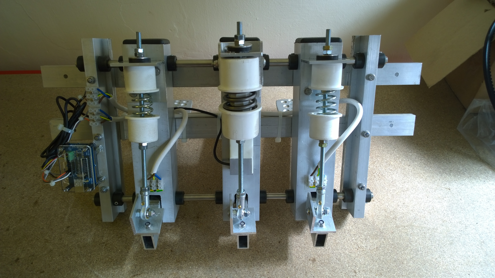
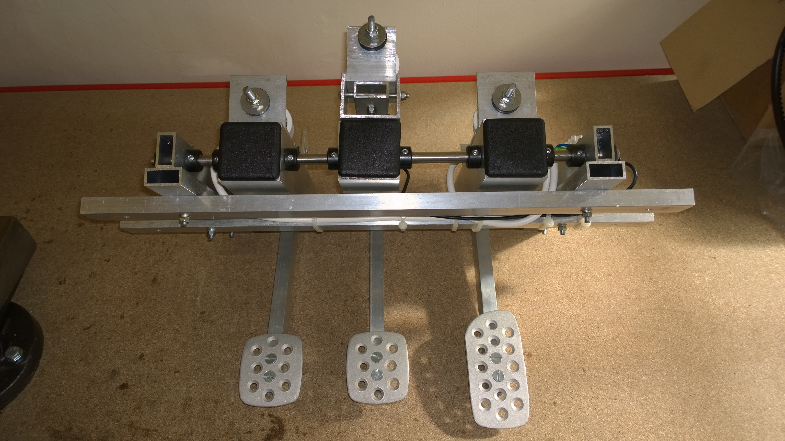
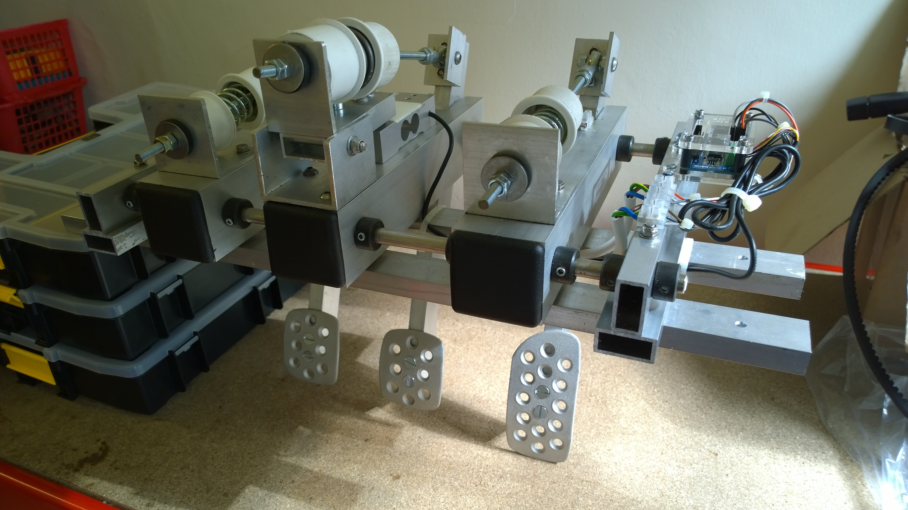
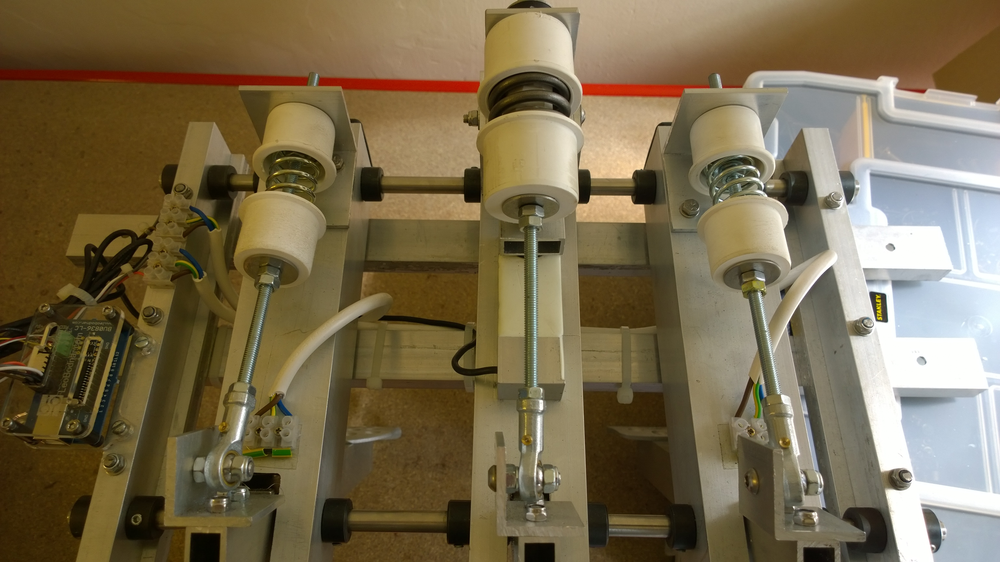
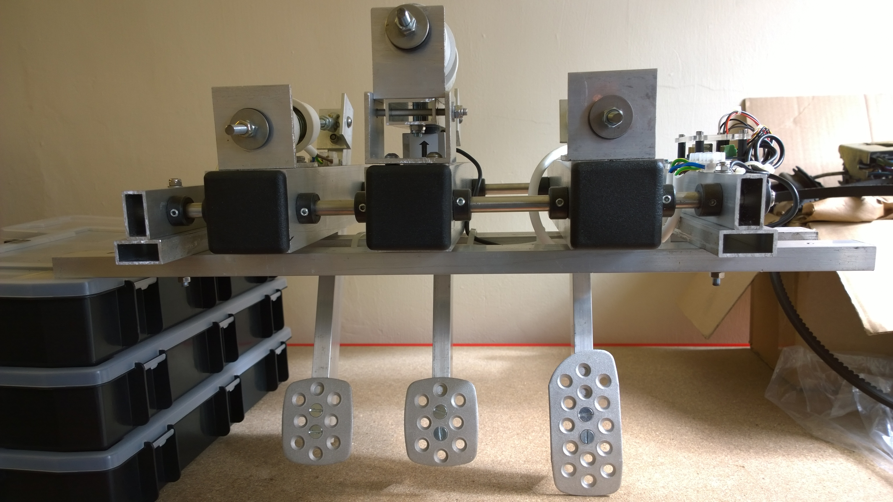
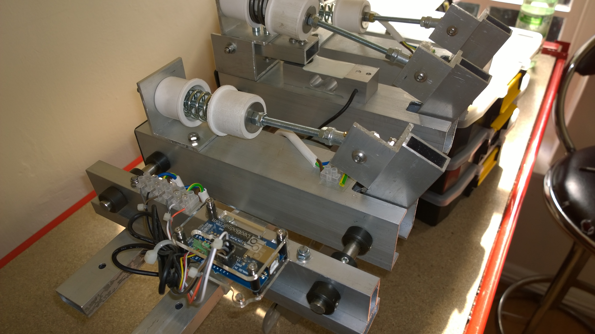
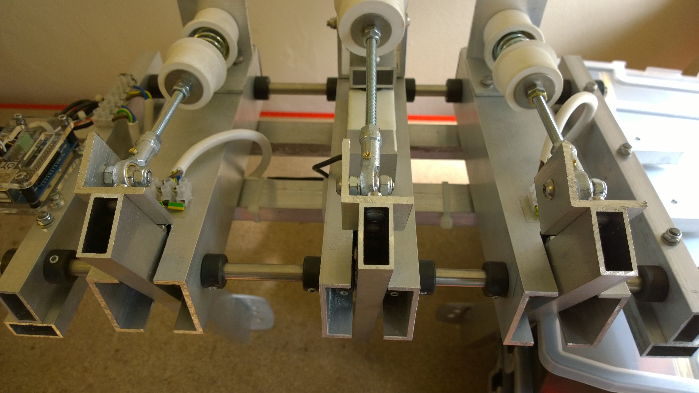
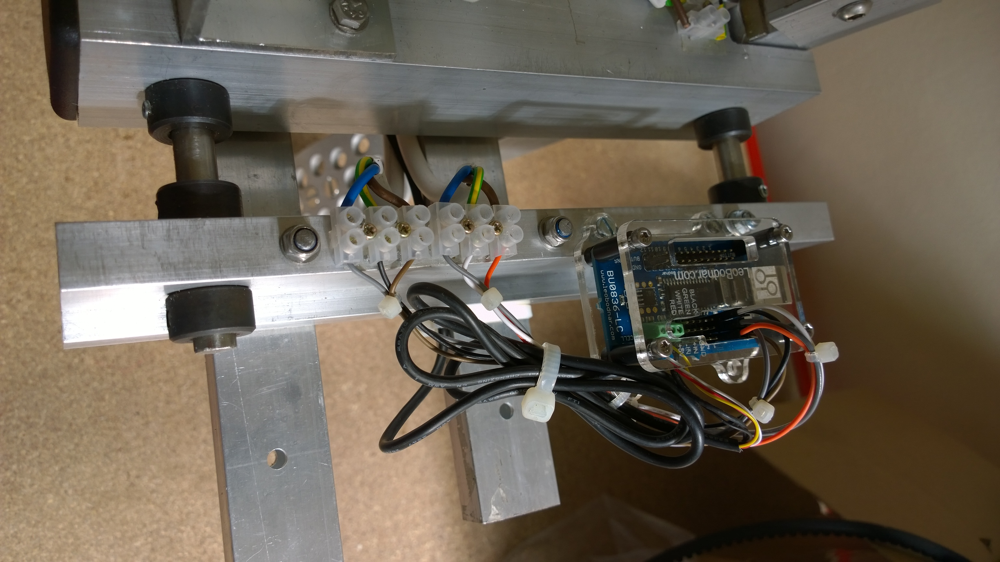
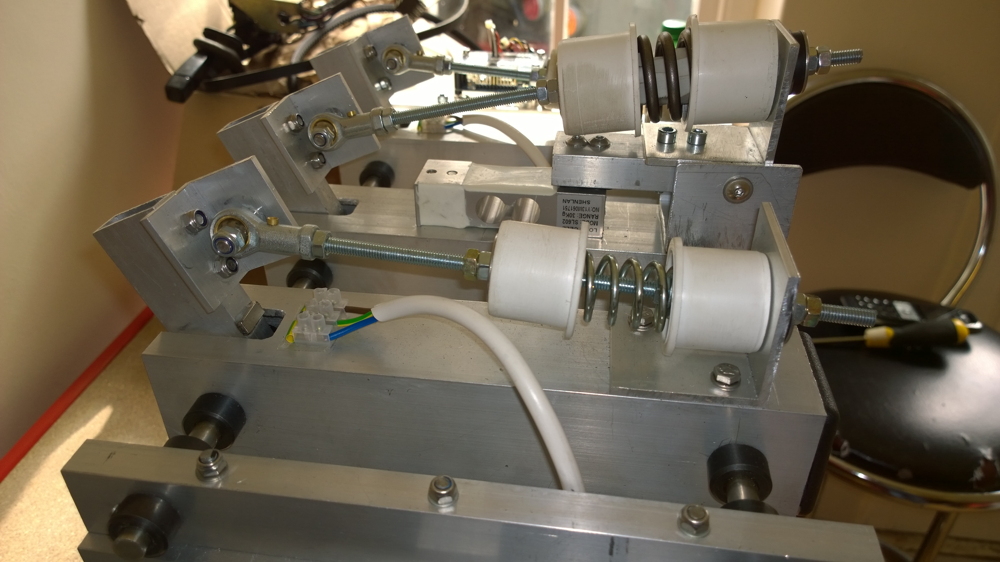
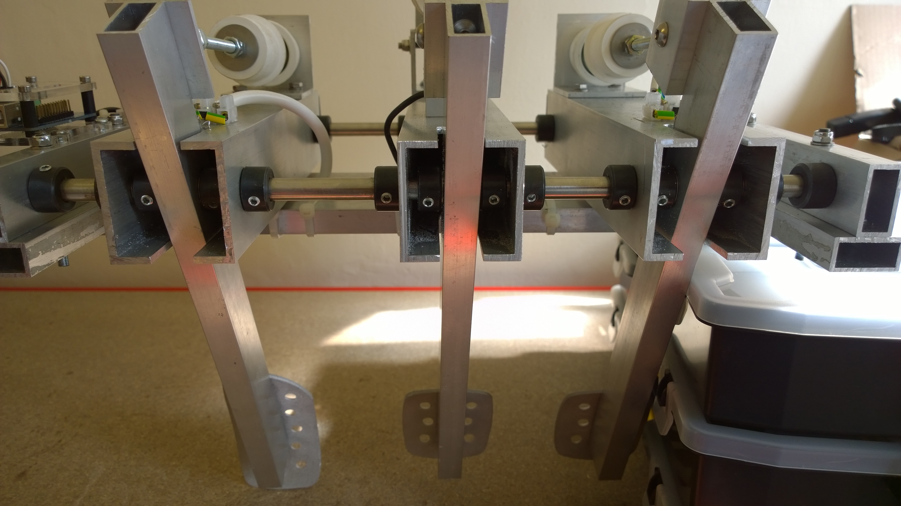
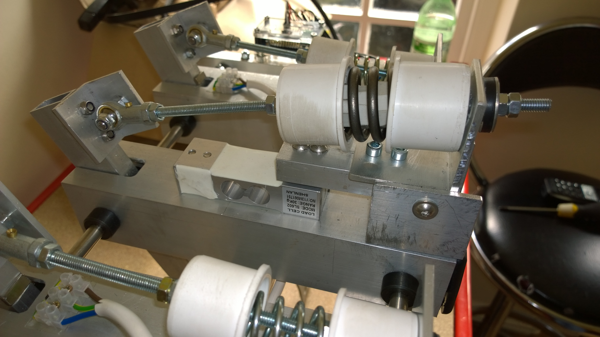
Return to home page.